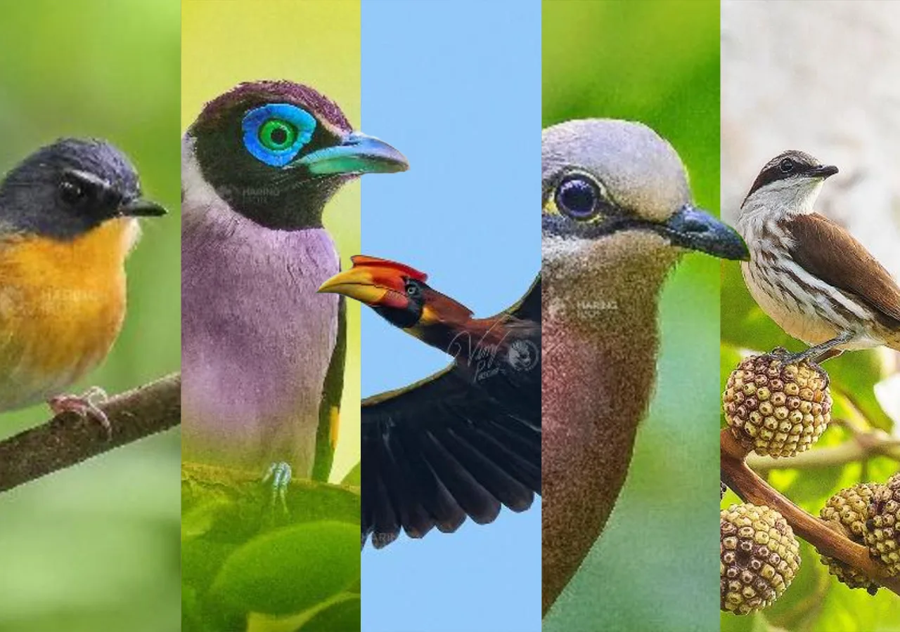
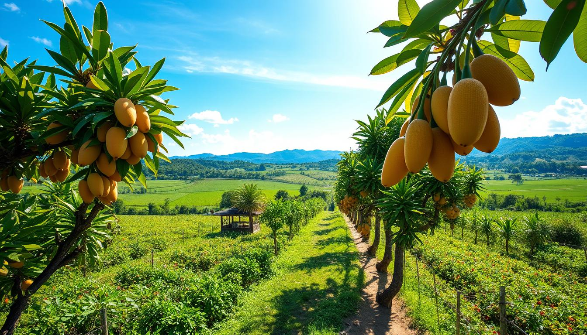
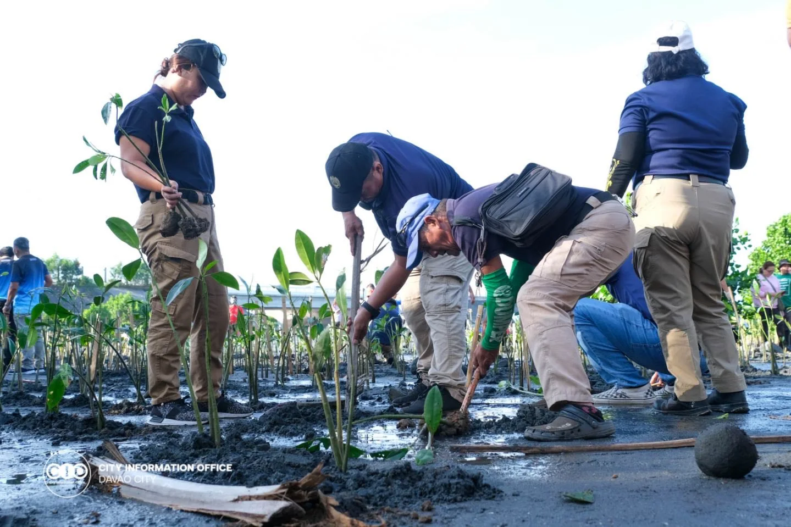

Connect with nature through our community-led eco-tourism initiatives. Take a farm tour in the Kapatagan highlands to see how the famous Mt. Apo coffee is grown, harvested, and roasted. Bird watchers can also join guided tours in the forested foothills to catch a glimpse of endemic species, including the magnificent Philippine Eagle.
Trek through protected forests that house endemic birds, deer, and exotic flora.
Learn about sustainable agriculture and the farm-to-table movement in the highlands.
Support local livelihoods by joining tours led entirely by indigenous communities.
Davao del Sur is deeply committed to preserving its natural wonders through sustainable eco-tourism. When you visit our protected parks and wildlife sanctuaries, your tourism footprint directly supports conservation efforts and empowers local communities. Connect with nature by taking a guided tour of a working coffee farm, where you can harvest and roast your own beans. Bird watchers can hike the quiet trails to spot rare species, while coastal visitors can participate in community-led mangrove tree-planting activities to help protect the shoreline.

Grab your binoculars and hike the Mt. Apo foothills to spot the magnificent Philippine Eagle.

Visit organic farms in Kapatagan to harvest fresh strawberries, vegetables, and coffee beans.

Join local environmental groups in Santa Cruz for a rewarding day of planting mangrove saplings.
Fly to Francisco Bangoy International Airport in Davao City, then take a bus south.
November to May is the dry season — ideal for outdoor activities and beach trips.
Davao del Sur offers affordable accommodations, food, and transport options.